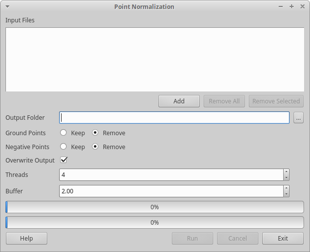

Point Normalization
The pointnormalize-app tool normalizes point cloud data by subtracting the
terrain elevation from the height of a non-ground point. This is useful
for the computation of biometrics and the
creation of canopy height models.
Point normalization is performed by constructing a Delaunay triangulation
using the ground points and interpolating the ground elevation at every
non-ground point from this "terrain" surface.
Currently, this tool accepts LAS files.
To normalize a point cloud:
- Start the pointnormalize-app.
- Click the "Add" button to add LAS files to the Input Files list.
- Click the "..." button to set the Output Folder. New normalized
files will be created here.
- Click "Keep" or "Remove" depending on whether you wish to discard
ground points or keep them.
- Click "Keep" or "Remove" depending on whether you wish to discard
negative-elevation non-ground points or keep them.
- Check "Overwrite Output" if you wish to overwrite the files in the
output folder. Take care not to overwrite the source files.
- Select the number of threads of execution.
- Select a buffer. The buffer expands the triangulation construction
using points from neighbouring files to ensure that no non-ground
point is outside the triangulation for the current block. Too large
a buffer will consume extra time and memory.
- Click "Run".
